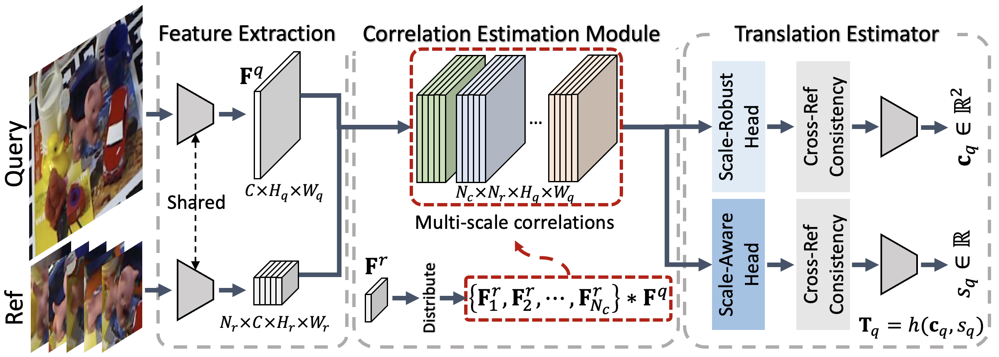

Method Overview
 We explicitly separate the scale-related features, such as the multi-scale correlations, into scale-robust and scale-aware components. We predict the object center and the size from the scale-robust features and scale-aware ones, respectively, leveraging the consistencies across neighboring references. We introduce a computationally-friendly approach to extract the scale-related features, which bypasses the need for multiple forward passes through the backbone. This is achieved by leveraging the fact that the receptive field of the reference-query convolution is related to the size of a reference kernel. Thus, we estimate multi-scale correlations by distributing the reference kernels in different manners in the convolution process.
Results on LINEMOD

Results on Synthetic LINEMOD